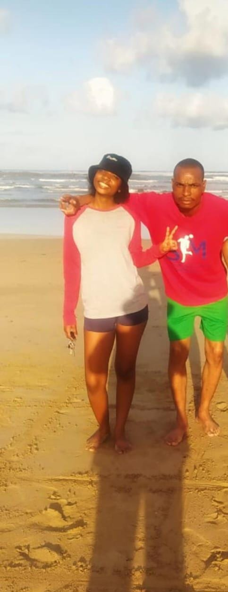
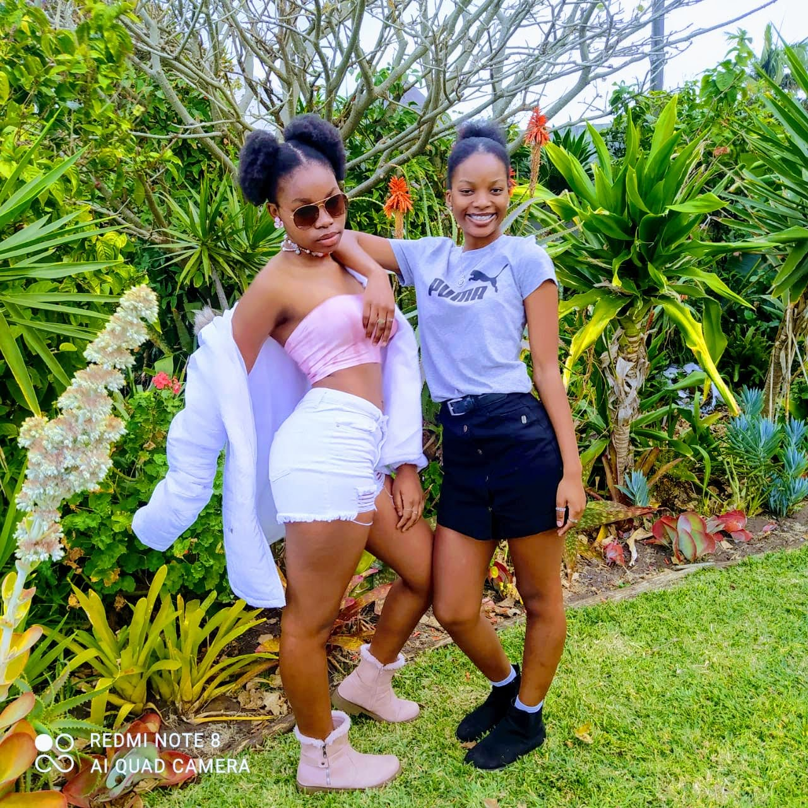

Despite the miles between them, she is surrounded by love and strength. 💖 Living with her mother, she feels the daily warmth, guidance, and care that shape her world. Her father, though in another city, is just as present in her life, showing up with words of encouragement, calls, and visits whenever possible. 👨👩👧 Together, her parents make every effort to be there for her, putting her needs and happiness first and building a foundation of love and resilience. 💪💫
💫 Their journey as parents has not always been easy. They've faced their share of challenges, but their commitment to being the best parents they can be is unwavering. 💪💖 🌱 Each of them brings something unique to her life—a balance of nurturing and strength, consistency and support, and an understanding that distance doesn’t diminish love. 💌 She is growing up with the beautiful knowledge that family isn’t just about being together physically but about always being there in heart, no matter the circumstances❤️.
🌸 Their relationship is a tapestry of emotions, filled with moments of both laughter and tension, understanding and frustration. They’re like two sides of the same coin—*like mother, like daughter* in the best (and sometimes funniest) ways. 👩👧 Their similarities and differences create a bond that’s sometimes stormy yet always rooted in deep, unbreakable love. 💫 They might clash over little things or dive into spirited debates, but beneath it all, they know they’re each other’s greatest allies. ❤️ Her mom is her fiercest protector, the one who cheers her on and sees her potential even when she doubts herself. 💪 And though she sometimes feels her mom doesn’t fully understand or gives advice she’s not quite ready for, she knows that no one else loves her quite like this.💞 Their love is one of a kind—imperfect but unwavering. Through every eye-roll 🙄, every hug 🤗, and every shared smile 😊, they’re learning and growing together, building a bond that is as complex as it is beautiful. 🌈
💖 Her relationship with her dad is something truly special—a connection built on shared passions and a deep, unconditional acceptance. From a young age, he introduced her to the world of sports, sparking in her a love for competition (okay, maybe he went a little too hard on that competitive part! 😑), teamwork, and resilience. 🏆⚽️ Whether they were watching games together 📺, playing soccer in the yard 🌳, or celebrating her victories on the field, he was always her biggest supporter and her coach. 💪 He encouraged her to push her limits and give her best, teaching her lessons that went far beyond the game. Through all those moments, he instilled in her a confidence and strength that will stay with her forever. 💫
Growing up with her younger sister was like having a permanent little shadow—a shadow with *a lot* of sass and way too much confidence for someone shorter. 😏 Sure, she was technically the “older sister,” but you’d never know it from the way her little sister acted like she was the boss. 😆 Their relationship was a blend of playful jabs, eye rolls, and endless sarcastic banter that somehow made them closer in a delightfully awkward way. They’d bicker about everything: whose turn it was to wash the dishes who finished the snacks 🍿, or who borrowed something without asking . But at the end of the day, they always had each other’s backs—*well, most of the time.* ❤️ They shared countless laughs, gave each other “helpful” advice (which, to be honest, usually led to disaster 😅), and rolled their eyes in perfect synchronization whenever their parents attempted “serious life talks.” 👀 Together, they were unstoppable—a perfectly imperfect sister duo who somehow balanced both rivalry and an unbreakable bond. 🌟
Now that they’re older, life has shifted from squabbles over who gets the front seat to celebrating each other’s biggest life moments. They’ve grown into their own unique paths, reaching milestones that, not so long ago, seemed like distant dreams. 🎓 From first jobs to graduations, new adventures, and dreams on the horizon, they’re each carving out their own place in the world. But despite all the change, one thing has stayed the same: their fierce, sarcastic, and unwavering bond. 💪💖 Her younger sister is still the one who can see right through her (well, *mostly* 😉), delivering honesty with a side of sarcasm that only s isters could get away with. And even though they’re chasing their own goals now, they’re still each other’s biggest fans, always there with a quick text, a laugh, or a much-needed reality check. 📲✨ Reaching these milestones feels a little less daunting and a lot more exciting because they know they’ve got each other to lean on. And even though they still roll their eyes 🙄 and trade snarky comments like pros, they wouldn’t have it any other way. Their sisterhood has grown from childhood mischief into lifelong support, and they’re both grateful for every milestone they get to celebrate—together. 🌟
Family is at the heart of who she is. ❤️ She’s the glue that keeps everyone connected—whether it’s wanting to visit *maf*, sending out birthday reminders 🎂, or making sure everyone knows what’s going on in each other’s lives. She has a special knack for bringing people together, and her genuine love for family is contagious. 🫂 But if there’s one role she absolutely cherishes, it’s being an aunt (or maybe she’s just testing the waters for motherhood! 😉). To her, it’s the perfect blend of being a fun, loving role model and a source of endless joy and laughter. Her nieces and nephews know they can count on her for anything—from life advice to surprise ice cream runs 🍦—and they absolutely adore her for it. She’s the kind of aunt everyone hopes for, blending wisdom with warmth and adding a sprinkle of fun to every family moment.
Staying close with her extended family isn’t just something she does; it’s a part of who she is. ❤️ She knows that every moment spent together, every shared memory, strengthens the bonds that make her family a source of warmth, laughter, and love. 🌟 For her, family isn’t just about being there for the big moments—it’s about showing up for each other day in and day out, supporting one another through life’s little joys and challenges. 🫂 She’s creating a legacy of connection and love, a foundation she hopes will last for generations. She understands that by nurturing these relationships now, she’s building a family rooted in unity and care, a family that will continue to cherish these ties and pass them down.
Colossians 3:13 "Bearing with one another, and forgiving one another, if anyone has a complaint against another; even as Christ forgave you, so you also must do."